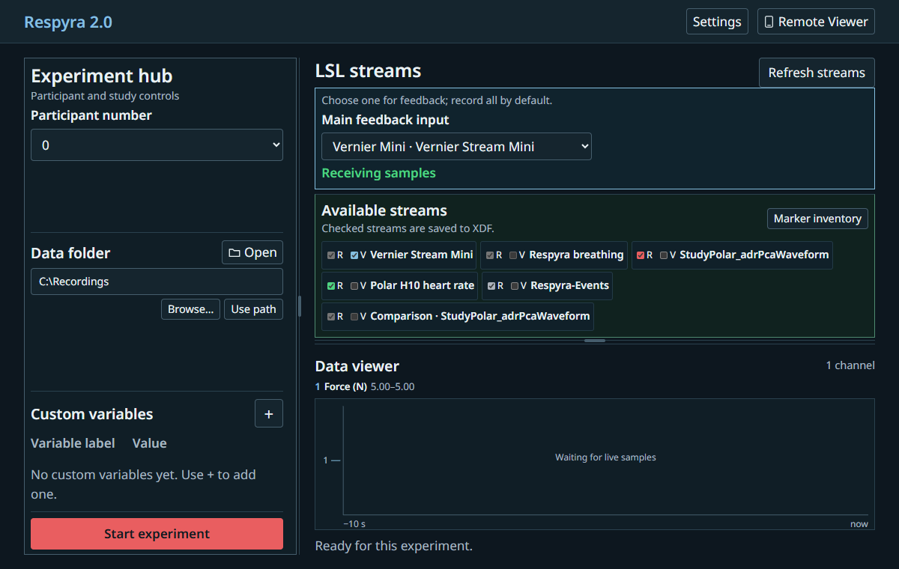
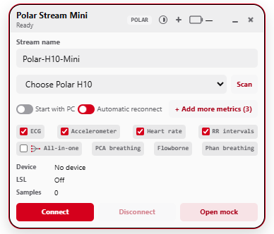
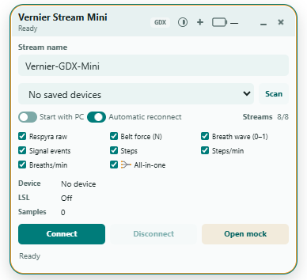

Breathing target-tracking studies on Windows
Respyra 2.0 gives researchers an experimenter control window, a PsychoPy participant task, and a native LSL/XDF recorder in one installable app. Participants follow a breathing target while the study varies the visual feedback they receive.
Study documentation
Use the default-variable reference to identify each recorded measurement, its raw source, units, processing and interpretation. The marker library lists every possible experiment event and its payload. The study guide covers sensor setup, calibration, the configured task and saved files.
The three apps
One suite installer supplies three independent applications and a shared launcher. The previews show the installed Vernier app and simulated control states; they contain no participant recordings.
Updating an existing suite: close all three apps and run the newer installer under the same Windows account. Setup finds the existing program folder and handles the update without a separate manual uninstall, preserving recordings and saved preferences. Use study defaults in Polar Stream Mini to apply the current minimal selection to an existing profile.






What it does
- Runs calibration, baseline, countdown, target tracking, and participant assessments in PsychoPy.
- Receives a compatible raw Force stream from Vernier Stream Mini or a signed breathing waveform from Polar Stream Mini over LSL.
- Records every available input and a separate calibrated comparison waveform for each compatible alternative by default. One chosen input drives feedback; original CSV and BIDS exports are automatic.
- Saves a six-panel session summary automatically from the verified XDF, without needing a CSV sidecar.
- Offers an optional, approval-based phone controller for monitoring and study controls.
Get a breathing stream
The suite installs both Mini apps. Connect the one that matches your sensor; each publishes live data to Respyra over LSL.
 Vernier Stream Mini
Vernier Stream Mini
For a Vernier Go Direct Respiration Belt. Fresh settings publish raw device data, including Force in N, and connection events. The other six outputs remain optional.
Download Vernier Stream Mini separately Polar Stream Mini
Polar Stream Mini
For a Polar H10. Fresh settings publish raw ECG and accelerometer data, native heart rate/RR intervals, Chest Motion, Chest Motion DT and Flowborne phase. Other metrics and the combined copy start off.
Download Polar Stream Mini separatelyDownload and set up
The suite installer supports Windows 10/11 x64. It includes Respyra 2.0, both Mini apps, Python/PsychoPy, and the recorder. Connect a compatible Vernier or Polar sensor before starting a study.
Recordings are saved in the data folder inside the Respyra 2.0 installation. The Experiment hub shows the active folder path and lets you open, browse or paste a new one. Setup downloads Microsoft WebView2 if it is absent. Phone control needs an Internet connection.
Saved XDF recordings automatically produce a six-panel session summary. Troubleshooting mode opens a separate error window with a copyable report when a run fails.
This unsigned v2.3.13 suite is a preview. Installed synthetic-input recording, three-input XDF/MNE checks and upgrade/uninstall retention passed. Physical Bluetooth reconnect, sensor performance, full-duration display timing and clean-machine installation remain unqualified.
Built on the original respyra
Respyra 2.0 is developed by George Fejer on top of the original respyra toolbox by Micah Allen and the Embodied Computation Group. The original supplies the PsychoPy respiratory-tracking task and logo; this project adds the Windows suite, Polar/Vernier LSL inputs, synchronized recording and experimenter controls.
Allen, M. (2026). respyra: A General-Purpose Respiratory Tracking Toolbox for Interoception Research. PsyArXiv.